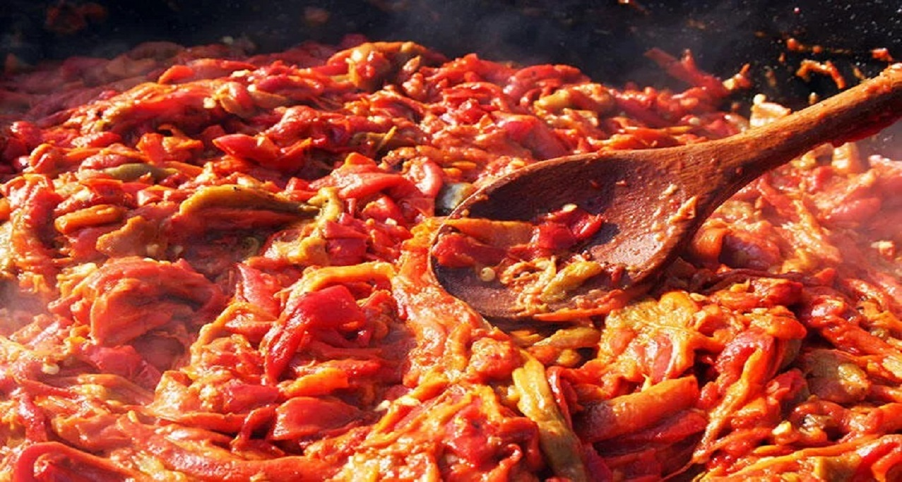

Son Makalelerimiz
Sizler için özenle yazdığımız makalelerimizi okuyarak sizde diyet ve sağlıklı beslenme hakkında bilgi sahibi olabilirsiniz.

Kırmızı Biberli Yoğurt
Bu muhteşem tabağın faydaları, güzelliğinin bile önüne geçebilecek potansiyelde içerdiği A vitamini, C vitamini, beta-karoten ve antioksidanlarla kalp hastalıklarına yakalanma riskini azaltır...
Devamını OkuKabak Spaghetti
Size nefiss bir kabak spagetti tarifi veriyorum hemde tüm tabak 204 kcal! Kabakların kabuğunu soyduktan sonra soyacakla kabağın hepsini kesiyoruz. Kesilen kabakları 1 tk zeytinyağda sote...
Devamını OkuHangi Besinleri Tercih Etmeliyiz?
Ara öğün önerileri için mükemmel bir görsel yakaladım sizlere! Ulaşabileceğimiz, her zaman elimizin altında olan o kadar doğal atıştırmalıklar varken malesef hala ara öğün...
Devamını Oku